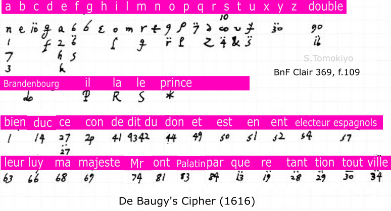
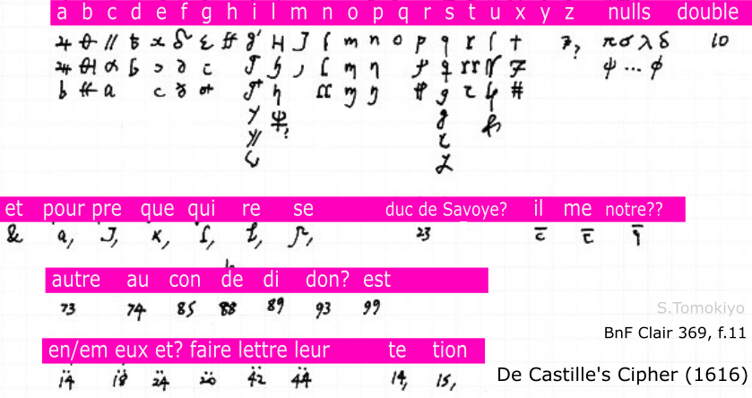
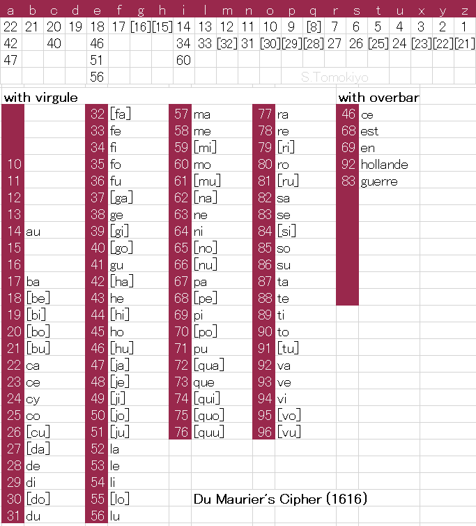
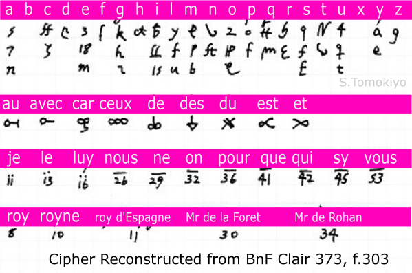
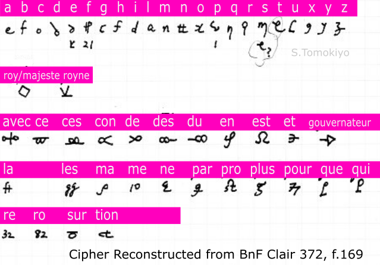
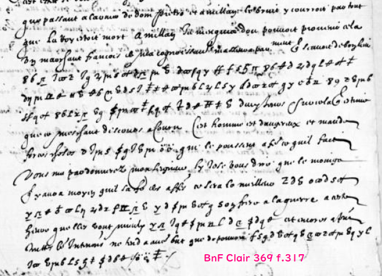

French ciphers during the reign (1610-1643) of Louis XIII are described. While only a small collection of specimens are presented, it is believed that they are representative of the French ciphers at the time.
Observations on Ciphers during the Reign of Louis XIII
Ambassadors in Germany, the Low Countries, and Switzlerland (1612-1616)
Ambassadors in Germany (1640s)
Louis XIII's Mysterious Letter (1635)
Louis XIII's reign saw the appearance of a skilled codebreaker, Antoine Rossignol (1600-1682), who was recruited by Richelieu in 1628 and quickly established himself at the court. As for code making, two-part code is said to have been introduced by him. David Kahn, who examined several nomenclators at the time, considers this "most important technical improvement that nomenclators underwent in their 400-year reign" was introduced "about the middle of Rossignol's stewardship" (Kahn (1967) p.160-161). Although there had been two-part codes consisting of tables "per scrivere" and "per cavare" at least as early as 1588 (see another article), most ciphers continued with a nomenclature of alphabetically ordered elements.
Among the few specimens I know, Louvois' code (1676) is the first mainstream French two-part code (though one-part codes continued in use in other ministries) (see another article).
Unlike the entirely numerical ciphers after 1676, the earlier specimens I know from the personal reign of Louis XIV (1661, 1675, 1676) all employ two-digit figures with diacritics in the nomenclature (another article). I pointed out in 2019 that this characteristic was already seen in Henry IV's time (another article). Many of the specimens of ciphers in the time of Louis XIII presented herein also follow this pattern.
The cipher of Hesperien (a councillor of the Council of Bearn) uses three-digit figures rather than diacritics to expand the vocabulary of the nomenclature.
• The cipher (1612) of Sainte-Catherine, resident in the Palatinate from 1612 to 1620, was based on a cipher (1589) for Guillaume Ancel, resident to the Emperor from 1589 to 1603.
• Ambassador Sancy started to use a new cipher (called Sancy's Cipher-2 herein) soon after Louis XIII officially came of age on his thirteenth birthday in 1614, though Queen Mother's rule continued until 1617.
• Ambassador Césy at first used a cipher given to an extraordinary envoy sent before him (called Nans-Angusse Cipher herein).
• The Cesy-Coeuvres Cipher was used by d'Estrees (Coeuvres), Cardinal de Sourdis, and Sillery in Rome in 1620-1623 in writing to Cesy, Ambassador in Constantinople. Sillery (and Bethune) used another cipher (Cesy-Sillery Cipher) in writing to Cesy in 1624.
When Henry IV was assassinated in May 1610, Queen Marie de Medici became regent for eight-year-old Louis XIII. Marie's letters of 15 September and 10 November 1610 to Savary de Breves, then ambassador in Rome (Wikipedia), (undersigned "Brulart") in BnF fr.3789 (Gallica), f.17, f.19, contain short passages in cipher, not deciphered. The cipher does not seem to match the known ciphers used by Savary de Breves (see another article).
A similar-looking cipher is used in a letter from Henry IV to Savary to Breves, Paris, 5 January 1610 in BnF fr.3541, f.4-7. (I was made aware of this volume by Desenclos (2018), "Unsealing the Secret: Rebuilding the Renaissance French Cryptographic Sources (1530-1630)", n.6) This was solved by ciphertext-only cryptanalysis of George Lasry, assisted by Norbert Biermann and myself in 2021, after which Camille Desenclos pointed out the key is preserved in BnF (second-hand private communication).
According to catalogue information, BnF Clair 362 (not available online) contains ciphers of P. Jeannin de Castille, sieur de Blancbuisson (ambassador in Switzerland) (November 1611), Guillaume Ancel, sieur de Montchesne et de Meulles (ambassador in Germany), and Etienne de Sainte-Catherine (ambassador in Germany) (1612), and BnF Clair 370 (not available online) contains diplomatic ciphers of Etienne Saint-Catherine.
According to Desenclos (2017) (citing BnF Clair 362, f.204-205), the cipher (1612) of Sainte-Catherine, resident in the Palatinate from 1612 to 1620, was based on a cipher (1589) for Guillaume Ancel, resident to the Emperor from 1589 to 1603. A specimen of Sainte-Catherine's cipher letter is given in Fig.3 (taken from BnF fr.15927, f.23).
BnF Clair 369 (Gallica) contains cipher letters (1616) of Nicolas de Baugy, representative to the Emperor (Wikipedia) to Claude Mangot, Secretary of State for War and for Foreign Affairs (Wikipedia) (f.2 (undeciphered), f.59 (undeciphered), f.109, f.156, f.209, f.275, f.309). The cipher can be reconstructed as follows.

One merit of this cipher is use of figures with an umlaut for both letters and syllables, unlike De Castille's Cipher below, in which figures with an umlaut is limited to syllables.
BnF Clair 369 (Gallica) contains cipher letters (1616) of Pierre-Jeannin de Castille (Wikipedia), ambassador in Switzerland (f.11, f.13). The cipher can be reconstructed as follows. (The original cipher may be found in BnF Clair 362 (which I have not seen) mentioned above.)

This is more or less like a Caesar cipher, enciphering c as a, d as b, e as c, etc., with viariant forms all representing the same letter.
BnF Clair 369 (Gallica) contains cipher letters (1616) of Benjamin Aubery Du Maurier (Wikipedia), ambassador in the Low Countries, to Mangot (f.229, f.294). The cipher can be reconstructed as follows.

Du Maurier (or his clerk) intentionally left part of a word in the clear: "9 80, 5 est 47 31 26" reads "p ro t est a n s"; "14 31 38, 64, eu 7" reads "i n ge ni eu r", and "fort 34 34, 46 27" reads "fort i fi e r". Obviously, the clear text "est" (is), "eu" (had), "fort" (strongly) are meant to mislead would-be codebreakers.
Achille de Harlay de Sancy (Wikipedia) succeeded Salignac as ambassador in Constantinople from 1611 to 1619. (Emanuel Constantin Antoche, "Un ambassadeur francais a la Porte Ottomane: Achille de Harlay, baron de Sancy et de la Mole (1611-1619)" (Academia.edu))

BnF fr.16145 (Gallica) contains his letters from Pera (a district in Constantinople (Wikipedia), where there was a European community) in cipher to Villeroy or Puisieux (f.90, f.92, f.96, f.100, f.102, f.104, f.108, f.114) from August 1611 to June 1612. The same cipher is also used in letters to Puisieux or Queen Regent in BnF fr.16146 (f.374, 450, 452, 455, 460) (1611, 1614) and BnF fr.16147 (Gallica) (f.1-495 (except for f.46, 454), f.601 and f.609-619) (1611-1614) (the date on f.493v, f.602v, etc. may look "1615"; if so, this cipher was used even after the new cipher (below) came into use).
The original cipher is found in BnF fr.16146 (Gallica), f.414.

The nomenclature uses letters and Arabic figures with diacritics. For example, "a" with an overbar is "le roy", "o" with an overbar is "le grand seigneur" (i.e., the sultan). An "et" symbol (like a "mirrored 9") with an overbar is "M de Salignac." Other elements I encountered include: (with an overbar) 13 (ambassadeur), 23 (au), 24 (avec), 29 (autre), 46 (beaucoup), 58 (con), 59 (ce), 65 (capitulation), 67 (de), 68 (du), 69 (dit), 70 (don), 80 (en), 81 (ent), 82 (est), 83 (estre), 91 (france), 94 (faire); (with no marks) 15 (flamise?), 28 (holandois), 35 (jour), 37 (je), 38 (jay), 39 (jusque), 41 (la), 42 (le), 43 (luy), 44 (leur), 57 (me), 58 (mon), 77 (ou), 78 (ont), 79 (prince), 80 (paix), 81 (pays), 83 (porte), 84 (port), 85 (par), 86 (pro), 87 (pour), 88 (per), 89 (pra), 91 (que), 92 (qui); (with an umlaut) 5 (rien), 6 (re), 15 (sur), 30 (veoir), 31 (vaisseaux), 88 (pre).
This provides for several special signs: "ce qui sera entre ces deux caracteres ... sera nul" (cancel characters inbetween); "ces caracters ... doubleront leur prochain precedant" (double the preceding letter); "Et ceulx cy ... les anulleront" (cancel the preceding character).
Soon after Louis XIII officially came of age on his thirteenth birthday, 27 September 1614, Sancy started to use a different cipher in letters to the King or Puisieux in BnF fr.16145 (f.132, 134, 136) (1616); BnF fr.16147 (f.446, 454 (1618), f.499-606 except for f.601 (1615), f.623 (to the King, November 1614), and f.624 (to Puisieux, December 1614)). Use of the same cipher is also found in BnF fr.16148 (Gallica) (many from 1615-1618) and BnF fr.16149 (Gallica) (f.4, 13, 46) (1619). Sancy's letters in cipher are also found in BnF Clair 368 (1616), which I have not seen.


As with the previous cipher, this provides for signs to double the preceding letter, cancel the preceding character, and cancel characters inbetween. In one example, the doubling sign is used to repeat the preceding "de" in "au contrere de destourner ...." (BnF fr.16147 f.77)
BnF fr.16148 includes some undeciphered ciphertexts in this second cipher of Sancy. At least some are copies of deciphered ciphertexts in the same volume, but some seem to lack deciphered counterparts. For example, f.183 seems to correspond to the deciphered ciphertext at f.189 (but they are differently enciphered: see a symbol for "p" on the first line); f.194 is deciphered on f.187; f.248 is deciphered on f.246; but I have not located a deciphered copies for f.200, f.206.
Sancy was implicated when Samuel Korecki (Wikipedia) escaped shortly after the death (22 November 1617) of sultan Ahmed I (Wikipedia) because he had been sympathetic to the Polish prisoner. Sancy was held prisoner with his main servants. Louis XIII under the tutelage of his advisers sent Angusse, former secretary, and chevalier de Nans to Constantinople to demand full reparation. The French and the Ottomans were reconciled and Sancy returned to France in 1619 (Antoche p.758-759).
Etienne de Nans and secretary Jacques Angusse, sent to Constantinople in May 1618 (BnF Ms.4770), used the following cipher in their letters to Puisieux in BnF fr.16148 (f.463, 466, 468) in December 1618 and in BnF fr.16149 (f.16, 26, 39, 43, 48, 51, 54, 59, 66, 69, 71, 73, 79, 81, 94, 98, 100, 102, 109) in 1619. (Since "qq"-like symbols stand out in the ciphertexts, I provisionally called it the "qq cipher.")


This cipher was also used in the first letters of the new ambassador, Cesy in December 1619 - January 1620 (BnF fr.16149, f.113, 119, 123).
Philippe de Harlay, comte de Césy, succeeded Sancy as ambassador in Constantinople from 1619 to 1641.

His letters in cipher are in BnF fr.16149 (Gallica, Gallica) (f.127-471) (1620-1623) and BnF fr.16145 (Gallica) (from f.140) (1622-1623).

The nomenclature elements I encountered include: (with an overbar) 23(le grand seigneur), 24(le premier visir), 25(Moufre?), 29(roy de perse), 31(l'empereur), 39(ambassadeur), 47(affaires), 48(au), 49(avec), 50(autre?), 51(bassa), 57(Constantinople), 60(car), 66(de), 67(dict), 68(dont), 74(entreprise?), 80(faire), 84(faict), 87(galere), 88(gallious), 90(gens), 95(holande), 97(homme), 98(hommes); (with a comma [virgule]) 12(intention), 17(luy), 18(la), 19(le), 20(leur), 21(lettres), 22(monsieur), 27(mort), 29(mais), 30(me), 32(nous), 35(ne), 40(ou), 41(ont), 44(pologne), 47(pour), 49(pre), 50(per), 51(par), 52(prince), 54(que), 55(quoy), 56(qui), 60(rien), 62(re), 66(sans), 69(traicte), 70(tenir), 71(toute), 72(tousjours), 74(tion), 80(venir).


The following cipher was used by François-Annibal d'Estrees, later Marquis de Coeuvres (Wikipedia), ambassador in Rome, in his letters to Cesy in 1620 (BnF fr.16151 (Gallica), f.15, 17, 20, 27). It was also used by François d'Escoubleau, Cardinal de Sourdis (Wikipedia) in Rome (f.45, 22 January 1622) and the chevalier de Sillery (see the next section) in Rome (f.51, 6 August 1623) in their letters to Cesy.

This employs several code names: something like "lensogire" for "roy", "la Trouipette" for "le grand seigneur", "la lanar" for "le pape".


Noel Brulart, chevalier de Sillery (Wikipedia) switched to the following cipher in his letter to Cesy of 20 January 1624 (BnF fr.16151, f.57). It was also used by Philippe de Bethune (Wikipedia) in Rome to Cesy in 1624 (f.64, 78, 81, 83, 86).

BnF Clair 373 (Gallica) contains two cipher letters (1612) of Theophile Hesperien, a councillor of the Council of Bearn, to Paul Phélypeaux, lord of Pontchartrain and Secretary of State for Protestant Affairs (Wikipedia) (f.172, f.194). (Bearn, under personal union with France, was a separate principality (Wikipedia).) The cipher can be reconstructed as follows.

Use of three-digit figures rather than diacritics to expand the vocabulary of the nomenclature anticipates later codes. (The nomenclature includes 31((le) roy), 33(Mr le prince), 43[il], 44(Mr de la Foret), 53(Villeroy), 54(Hesperien), 58(avec), 61(ce), 62(con), 63(de), 64(du), 66(en), 67(est), 71(il), 73(la), 74(le), 75(les), 76(luy), 85(ne), 88(par), 90(pour), 91(que), 94(re), 96(si?), 98(tant), 99(vous), 111(...religion?), 113(ministres), 114(assemble...), 115(parlement?), 120(armes).)
BnF fr.18043 (Gallica) contains many letters from 1615-1616 partly in cipher addressed to Brulart de Leon, ambassador in Venice from 1611-1620, by Louis XIII, Marie de Medici, and Puysieux (Brulart de Sillery). BnF fr.18044 (Gallica) contains letters from 1617-1618 (f.20, f.109, f.168, f.184, f.283, f.315). (The letters of the King and the Queen Mother are countersigned "Brulart".) While Brulart de Leon left a treatise on cipher (which it is not clear whether he authored or just copied) (see another article at Academia.edu or its draft in Japanese), this cipher does not seem to be particularly different from other ciphers at the time.
The cipher can be reconstructed as follows.

There are some undeciphered passages in a letter from Louis XIII dated 26 September 1615 (BnF fr.18043, f.83-84), which include some symbols that cannot be read with the above key. Similar symbols are used in a letter from Louis XIII dated 25 July 1617 (BnF fr.18044, f.109v-110), and may be nulls.
(By the way, someone did a longhand calculation of 33*19=633 on BnF fr.18403, f.59v.)
Claudio Marini, Marquis of Borgofranco, was ambassador in Turin in 1617-1629 (Gellard). A letter to him partially in cipher, dated 13 July 1624, is presented in Fig.3 of Anna Cantaluppi (2010-2011), "Le carte del genovese Claudio Marini, ambasciatore del Re di Francia in Piemonte, nell'archivio della Compagnia di San Paolo", Bollettino della Società Piemontese di Archeologia e Belle Arti (Academia.edu), which allows reconstruction of the cipher.

The substitution cipher uses mainly symbols rather than Arabic figures, but the nomenclature consists of two-digit figures and ones with an overbar. (His cipher in 1610 is in another article).
BnF fr.3662, f.24bis, is a cipher in Italian with Claudio Marini (I have not seen it).

BnF Baluze 155 (Gallica) contains a letter, dated Dijon, 28 March 1631, of Louis XIII (undersigned Bouthillier) to Melchior de Sabran, a diplomat then resident in Genoa (1630-1637). It has a paragraph in cipher, which was solved by George Lasry in 2022 (see another article).

George Lasry confirmed the same cipher is also used for many letters of Sabran in BnF fr.4134 and fr.4135.
BnF Baluze 155 (Gallica) also contains in letters of October-December 1632 from Abel Servien, Secretary for War sent to Savoy for a diplomatic mission from 1631 to 1633 (Wikipedia), to Sabran (f.105, f.123, f.127, f.131, f.139). The two independently enciphered letters with some words in the clear (f.123 and f.127) allowed me to solve the cipher (see another article).

BnF fr.4134 (Gallica) contains Sabran's letters to Monsieur Bouthillier in 1633, including short passages in cipher, undeciphered (f.46, f.50, f.51, f.54, f.57, f.66, f.69, f.73). George Lasry found that Louis XIII-Sabran Cipher (1631), which he solved, (above) applies to these.
BnF fr.4135 (Gallica) contains Sabran's letters to Monsieur Bouthillier and one to the Duke of Crequy in 1635, including short passages in cipher, undeciphered (f.132, f.215v, f.217, f.224v, f.226v, f.227v, f.231v, f.239v, f.243, f.251) George Lasry found that Louis XIII-Sabran Cipher (1631), which he solved, (above) applies to these.

BnF Baluze 156 (Gallica), f.157, is a copy of (presumably Sabran's) letter of 9 February 1536 to "Mr de ch.gr." It has some passages in cipher, undeciphered.
BnF Baluze 156 (Gallica), f.40, is wholly enciphered, undeciphered. It seems to be an enclosure of a letter (in French) of Odoardo [Édouard] Farnese, Duke of Parma (Wikipedia), to Sabran, dated Plaisance, 27 May 1637. This was solved by George Lasry in 2022 (see another article).

BnF Baluze 163 (Gallica), f.7, is a letter signed "Chrysogono" addressed to Comte d'Avaux (Wikipedia). It is among papers from 1629-1633 when he was ambassador in Venice. The following key reconstructed from the few specimens is tentative.

The cipher also includes code names, which are something like "Lalammer" (Mr davallez), "Marel" (le doge), "Porfrio" (Mr le Cardinal), "Puriolio" (Mr dauaux), "Julion" (Cardinal de Richelieu) (very inaccurate transcription). Figure codes are also provided such as 547 (paix), 550 (la considera[ti]on), 558 (confiance), 551 (le siege), 307 (Mr de sausie), 700, 800, 803 (le Roy) (all with an overbar) and 561 with a grave accent (gens).
The arrangement seems nonalphabetical. More specimens are needed to see whether this is an early example of two-part code in France (or possibly this was used only by a local agent in Venice).
BnF Clair 373 (Gallica) contains a cipher letter (unsigned, undated) to Paul Phélypeaux (f.303). The cipher can be reconstructed as follows.

BnF Clair 372 (Gallica), f.169, contains an unsigned cipher letter (June 1617). The cipher can be reconstructed as follows.

BnF Clair 369 (Gallica) contains a partially enciphered letter dated Rome, 13? November 1616 from Cocquet to Mangot (f.316). It is not deciphered.

BnF Baluze 188 (Gallica), f.22, is a letter in Italian partly in cipher (18 May 1632).

The nomenclature consists of symbols of the form "letter+digits": h14 (altr), h20 (algun), h40 (ben), h51 (cred), r13 (fare), r35 (grand), r48 (havere), r66 (Cardinal Richelieu), p61 (francia), q14 (lettre), x57 (piu), x66 (quest), u16 (Re), u41 (Roma), u49 (spagli), y29 (stato), y44 (suo), y62 (voglio), y77 (volte).
Such a structure ("letter+figure") is also seen in Venetian ciphers (another article) and Prince Rupert's ciphers (see another article).
BnF fr.16158 (Gallica), f.292, is a letter of fra Guglielmo Vizani, 8 October 1637, in which some portions seem to be in an unsolved cipher.

BnF 3657 contains no.2 "chiffre" (which I have not seen).
BnF Baluze 147 (Gallica), f.4-5, includes code names and code numbers gathered by Étienne Baluze (Wikipedia), a scholar who served Jean Baptiste Colbert and his son. In one example (a letter from Richelieu to Mazarin, 29 March 1641), "Colmard" represents Mazarin. In another example, 29 with a grave accent represents Mazarin.
A memoire from Louis XIII (undersigned Bouthillier) to Saint-Chamond (Wikipedia) and D'Avaux dated 23 June 1637 in BnF Baluze 167 (Gallica), f.62, uses the following cipher, called Saint-Chamond's Cipher herein.

After this, letters/memoires to D'Avaux (including one addressed to both Saint-Chamond and D'Avaux) use a different cipher (see the next section).
On the other hand, Saint-Chamond's Cipher was also used in Louis XIII's memoire (undersigned Bouthillier) dated 9 August 1637 to Sieur de la Boderie sent to the court of the Landgrave of Hesse (BnF Baluze 169, f.208).
BnF Baluze 167-171 contain many letters partly in cipher addressed to Comte d'Avaux (Wikipedia), most of which use the following cipher (except for Baluze 167, f.62; Baluze 169, f.208).

The specimens include the following letters/memoires to D'Avaux:
in 1637 (BnF Baluze 167 (Gallica)): from Louis XIII (undersigned Bouthillier) (f.69, f.74, f.82, f.90 (addressed to Saint-Chamond and d'Avaux), f.127, f.143, f.157, f.205);
in 1638 (BnF Baluze 168 (Gallica)): from Leon Bouthillier, comte de Chavigni (f.26, f.84, f.90, f.131, f.156, f.158, f.166, f.170, f.198, f.208, f.212, f.215, f.244, f.265, f.274, f.283, f.289, f.297, f.301, f.304), Jean de la Barde (f.149), Louis XIII (f.233) as well as a letter (of D'Avaux?) to Chavigni (f.246, undeciphered: "c'est ce qu'on pouvoit desirer dudit Salvius pour ce regard"; "de ne consentir aucune suspension d'armes quand on viendra a traiter si ce n'est que le", ...);
in 1639 (BnF Baluze 169 (Gallica)): from Claude Bouthillier (f.2-6 (in the order ff.5,6,3,4,2), f.46, f.80), Jean de la Barde (f.52, undeciphered: "du Racaci", "Bisterfeld", "son prince", "ledit Bisterfelds", "l'Italie"; f.107, f.112), Chavigni (f.97, undeciphered: "le grand seigneur", "l'a[f]faire de Racoci", "la veu de ce prince"; f.129; f.142, undeciphered: "s'il ne tient qua luy promettre la terre de six mil livres de revenu sans luy * f falquer cette somme sur sa pention pour le faire resoudre a revenir en France", "vous alliez jusques la"; f.144; f.169; f.184; f.191; f.204; f.218; f.230; f.255);
in 1640 (BnF Baluze 170 (Gallica)): from Chavigni (f.63, f.91, f.124, f.130, f.138, f.145, f.228, undeciphered: "sont mal satisfaits de *", ..., f.233, f.239, f.258, f.273, f.300, f.320, f.322); and
in 1641 (BnF Baluze 171 (Gallica)): from Chavigni (f.25, f.61, f.141, f.158, f.173).
(Germany was then in the midst of the Thirty Years War. In 1638, D'Avaux was sent by Richelieu to Hamburg to negotiate with Salvius, the Swedish representative in Germany, which led to a renewal (15 March 1638) of the alliance between France and Sweden.)
Cardinal Richelieu was Louis XIII's chief minister from 1624 until his death in 1642. He recruited Antoine Rossignol, who deciphered Huguenots' messages at the siege of La Rochelle in 1628.
Richelieu is said to have used the Cardan grill in both private and diplomatic correspondence (Wikipedia).

Wits Interpreter by J.C. (traditionally considered to be John Cotgrave (Wikipedia)), (Internet Archive 3rd ed.(1671), p.515) prints a cipher attributed to Richelieu (p.491), it is a Porta-like pairing cipher table. But teh other ciphers following this all seem to be taken from Porta's book. So, a more reliable source is needed.
BnF fr.3829 (catalogue), f.87 (DECODE R9461) is a letter from Cardinal Richelieu to Monsieur de Rancé partly in cipher. F.89 (DECODE R9462) appears to be in the same cipher. These are undeciphered.
Since short fragments of ciphertext are interleaved with cleartext, this may not be very difficult for people who can read the cleartext. My transcription is here (cleartext is only partially transcribed).
A cipher used in Richelieu's correspondence in 1641 was identified in 2020, when Norbert Biermann solved a cipher letter dated Paris, 5 November 1642 and addressed to M. d'Aiguebère (Klausis Krypto Kolumne).
The letter is presented at an auction site, which describes some background.
D'Aiguebère was then in command of Aire (now a commune in the Pas-de-Calais department in the northern France), which the French army under La Meilleraye captured from the Spaniards in July 1641 (border towns between France and the Spanish Netherlands were the focus of contest in this theatre of the Thirty Years' War). Aire was in turn sieged by the Spaniards. La Meilleraye could not relieve, and in December 1641, deprived of food, the French army left the town (Memoires de Montglat in Collection complete des memoires relatifs a l'histoire de France, vol.49, p.315, 327, 329 (Google)).
The cipher can be reconstructed from Norbert's solution of the ciphertext.

Basically, it is a homophonic substitution cipher that has numbers, letters, and other symbols to represent the letters of the alphabet. Unlike dispatches in the ciphers presented above, only a few code elements are used. According to Norbert's conjecture, "39" is "secourir" and "44 is soldats". There are also unidentified "45" and "50". A "Delta-like symbol" is conjectured to be "Le Roy."
There is a letter from Louis XIII, dated 6 April 1635, which is written in the normal alphabet but is full of nonsensical words except for a few French words. (I learned of this from David Chelli and from Cipherbrain.)
Here is my provisional transcription:
It is obvious this is not in a usual substitution cipher. Then, the first possibility is jargons (e.g., BnF fr.7139, f.270 (see another article), BnF fr.3995, f.28 (see another article), BnF Baluze 147, f.4 (see above)). Alternatively, three- or four-letter code words such as "bac", "bobe", "her", "rabo" remind me of some Spanish ciphers from the 16th to 17th century. But neither jargons nor code words seem to be the case here, because both are usually used for names/nouns, while words other than nouns/names appear to be "encrypted" in this specimen.
Some ideas are proposed in Cipherbrain, but no conclusion is reached.
Camille Desenclos, "Transposer pour mieux transporter, Pratiques du chiffre dans les correspondances diplomatiques du premier xviie siècle", in Matière à écrire (2017)
See also my related articles:
S.Tomokiyo, French ciphers during the Reign of Henry IV of France
S.Tomokiyo, French Ciphers at the time of the Fronde
S.Tomokiyo, Ciphers Early in the Reign of Louis XIV
S.Tomokiyo, French Ciphers during the Reign of Louis XIV